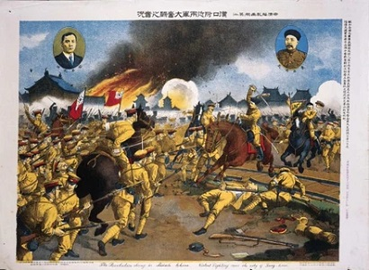
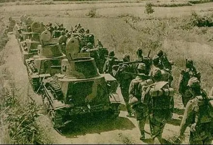
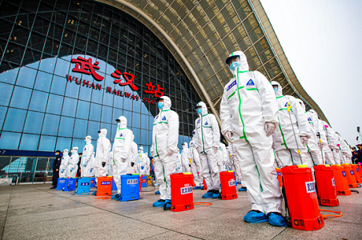

| 回到寝室主页 | ||||
| 首页 | 美食 | 景点 | 历史 | 疫情 |
|  | 武昌起义，也被称为辛亥首义、武汉首义，是旨在推翻清朝统治的武装暴动，也是辛亥革命的开端。革命党人获胜，湖北光复，湖北军政府成立，黎元洪被推举为都督，改国号为中华民国。 起义的胜利逐步使清朝走向灭亡，并建立起亚洲第一个民主共和国——中华民国，标志着中国封建帝制的终结和民主共和制度的开始，为中国现代化进程奠定了重要基础。 |
|||
武汉会战，是抗日战争时期中国军队在武汉地区同日本侵略军展开的一场会战。中华民国二十七年（1938年）6月至10月，中国第5、第9战区部队在武汉外围沿长江南北两岸展开，战场遍及安徽、河南、江西、湖北4省广大地区，是抗日战争战略防御阶段规模最大、时间最长、歼敌最多的一次战役 [1-3]。 此战，中国军队浴血奋战，大小战斗数百次，大大消耗了日军的有生力量，日军虽然攻占了武汉，但其速战速决，逼迫国民政府屈服以结束战争的战略企图并未达到。此后，中国抗日战争进入战略相持阶段。 |
 | |||
|  | 湖北抗疫是中国抗疫的缩影，作为疫情阻击战的最前线和主战场，湖北和武汉人民在以习近平同志为核心的党中央坚强领导下，第一时间果断封城封省，在全国人民的支持下，众志成城，绝地反击，与新冠肺炎疫情展开殊死搏斗，不仅为中国战胜疫情付出了巨大牺牲，也为全球抗击疫情作出了重要贡献。 1月23日凌晨，武汉市新型冠状病毒感染的肺炎疫情防控指挥部发布公告，自2020年1月23日10时起，本市城市公交、地铁、轮渡、长途客运暂停运营；无特殊原因，市民不要离开武汉，机场、火车站离汉通道暂时关闭。恢复时间另行通告。 |
|||